The premium controller for Denon and Marantz AV receivers - every zone, every mode, every detail.

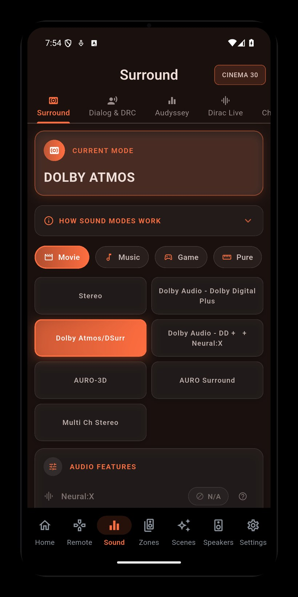
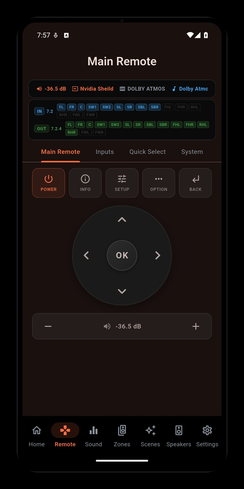
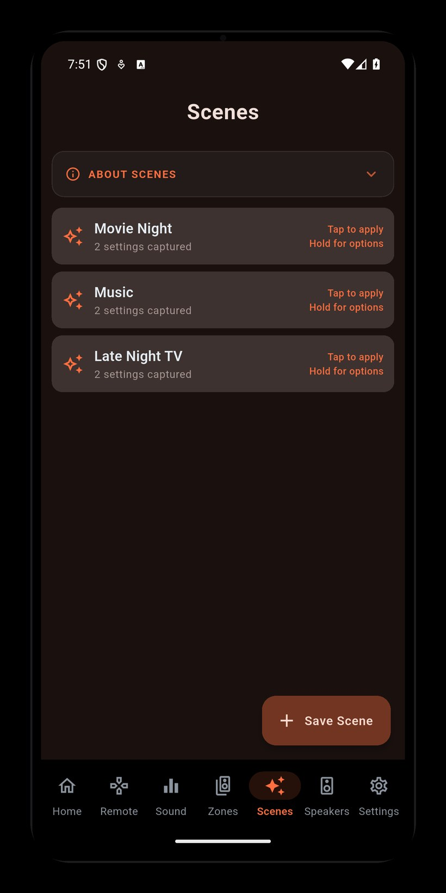
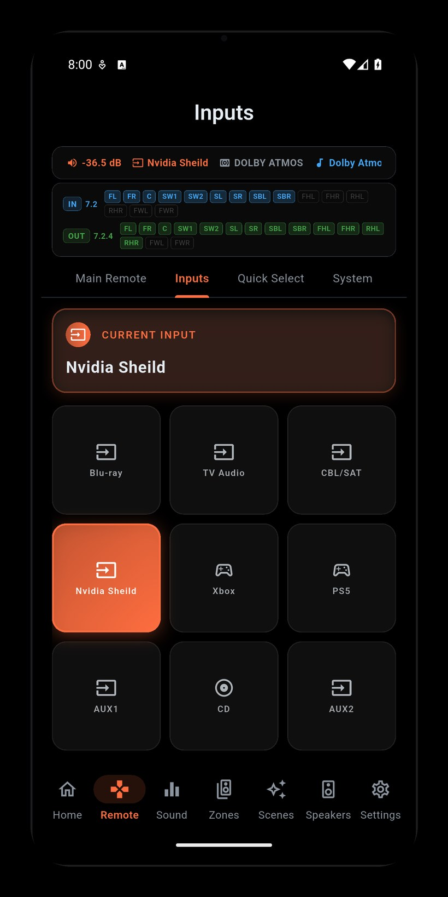
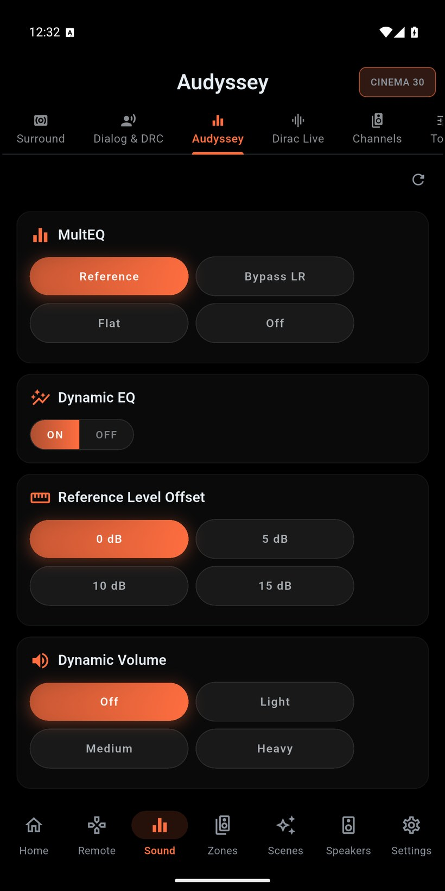
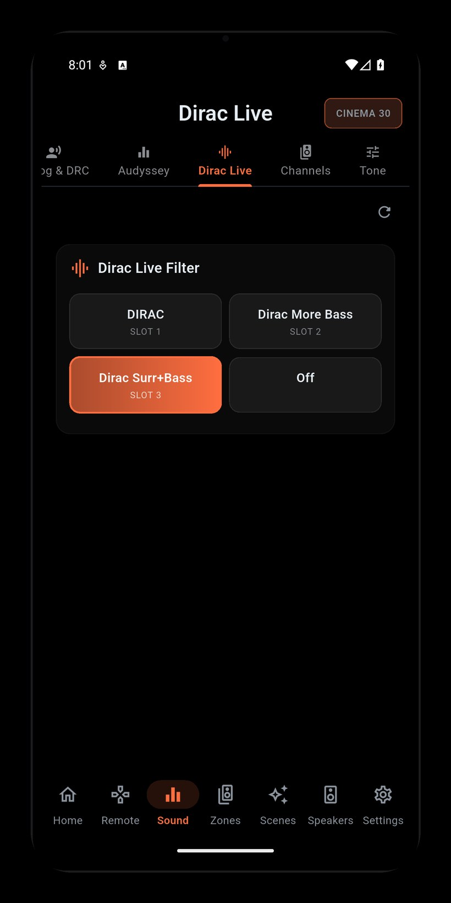
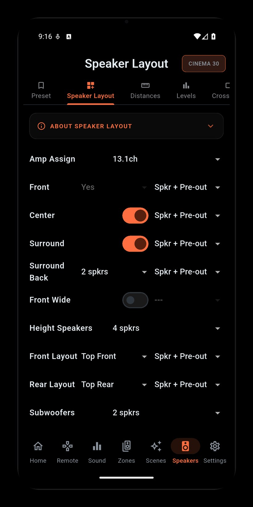
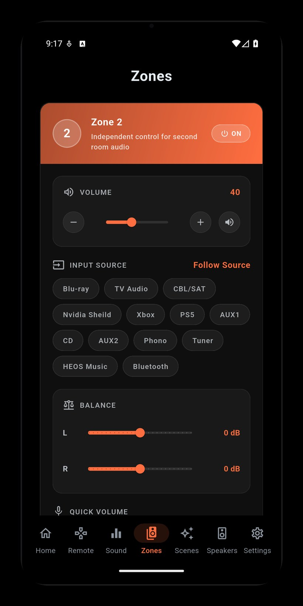
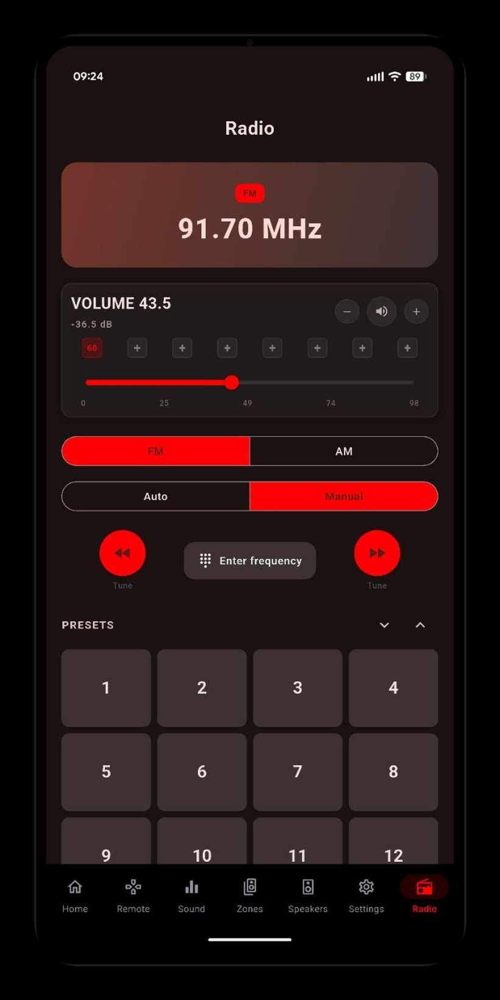
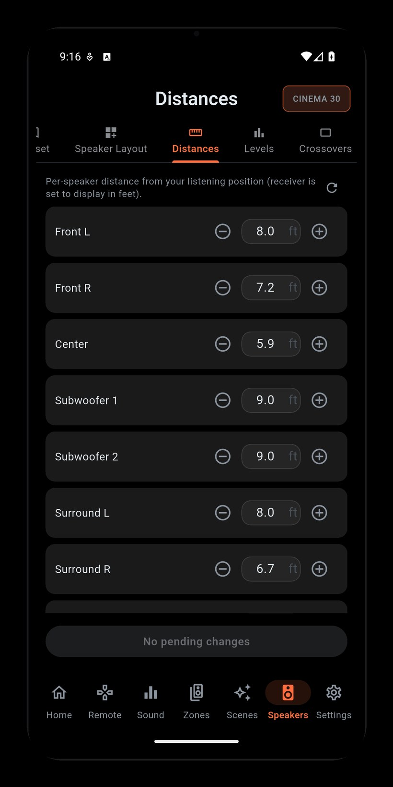
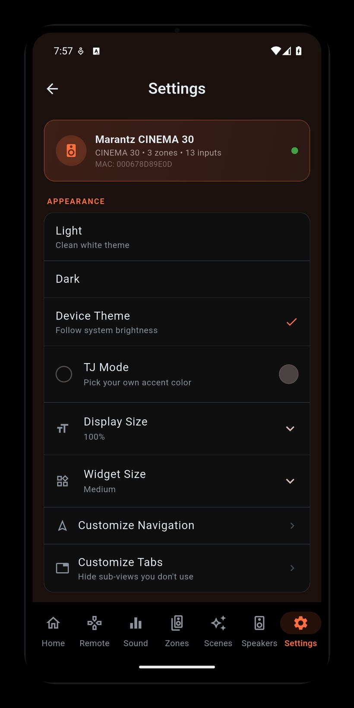
Capture your entire setup - input, volume, sound mode, Audyssey/Dirac, speaker preset, channel levels, and zones - and recall it all with a single tap.
Precise volume with a dB readout, one-tap input switching on a visual grid, and the full surround-mode set: Dolby Atmos, DTS:X, Auro-3D, and more.
A premium virtual remote with a navigation D-pad, playback transport, mute, and quick volume - everything the physical remote does, and then some.
Independent power, volume, input, and quick presets for Zone 2 and Zone 3 - run the whole house from one screen.
Full control over Audyssey MultEQ, Dynamic EQ, Dynamic Volume, LFC, and Containment Amount - dial in the room without leaving your seat.
Switch Dirac Live filter slots, configure IMAX mode with crossover settings, and adjust Auro-3D presets - the calibration features enthusiasts actually use.
Independently trim every speaker in your system, from front left/right to the overhead height channels.
HDMI output, front-panel dimmer, 12V triggers, eco mode, auto-standby, HDMI CEC, Bluetooth, and more - the deep settings menu, made usable.
Recall favourite input/volume/mode combos in one tap. Light, Dark (AMOLED), or Device theme, plus a customisable tab bar.
Tune FM/AM by frequency or stored preset, and watch a live now-playing display with album art from HEOS.
Enter your receiver's IP address, or let the app find it on your network.
AVR Maestro talks to your receiver directly over the local network - HTTP for commands, Telnet for live events.
Volume, inputs, surround, zones, calibration, and scenes - all from your phone, tablet, or desktop.
AVR Maestro is an independent, third-party application developed and published by MiyaraHub Technologies LLC. It is not created by, affiliated with, endorsed by, sponsored by, or officially connected with Denon, Marantz, Sound United, Masimo Corporation, or any of their subsidiaries or affiliates.
"Denon," "Marantz," "HEOS," "Audyssey," "MultEQ," "Dirac Live," "IMAX Enhanced," "Auro-3D," and all related names and logos are trademarks or registered trademarks of their respective owners, used here for identification purposes only.
Get AVR Maestro on your platform of choice - one-time purchase, no subscription.